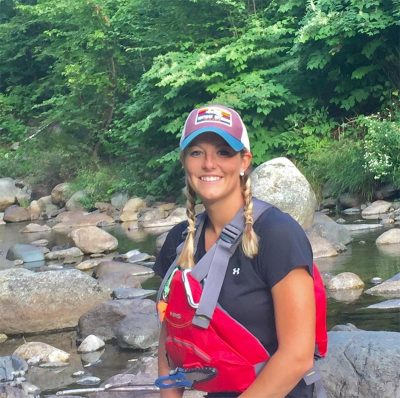
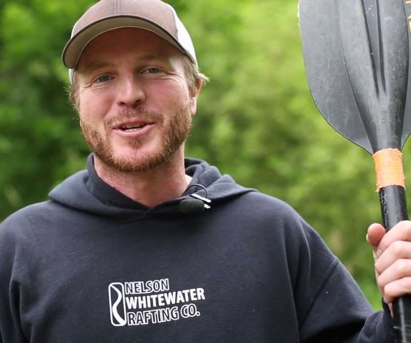
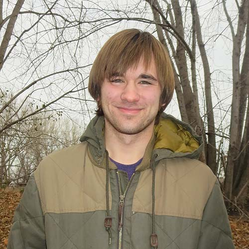

Meet Our Guides
Kayla Smith
Kayla Smith has been working at Salmon River Adventures for 4 years. She is a senior at Brigham Young University - Idaho, and works here during the summer. She has been rafting since she was 12 years old and loves it! She is also an accomplished paddle boarder and enjoys kayaking. Kayla loves to lead family excursions and is known for her ability to make even the most apprehensive of rafters feel at ease. She also loves to lead tours for the more experinced and adventerous guests. Kayla has rafted the Salmon River hundreds of times, and has also had experience rafting other rivers such as the Colorado river, along with many others.
Kevin Johnson
Kevin Johnson is the lead tour guide at Salmon River Adventures. He started out leading tours in college during his summer breaks, and now leads tours full time. He has lead tours now for over 10 years. Kevin is an experienced rafter and has lead tours through even the most treacherous of rapids. Whitewater rafting is his passion and he loves to share that passion with others. Kevin also trains all new guides before they being leading their own rafting excursions. With Kevin, you are sure to have a great time on the river!
Tyler Brown
Tyler is Salmon Rivers newest guide, but don't let that fool you. He has been rafting for over 8 years and can handle anything the river throws at him with ease. Tyler not only loves to lead rafting tours, but also leads kayaking adventures and teaches paddle boarding lessons. Tyler has a great sense of humor and everyone who meets him has a great time! Tylers knowledge about Salmon River and its history is impressive. With his as your guide you are sure to have fun and learn something along the way.